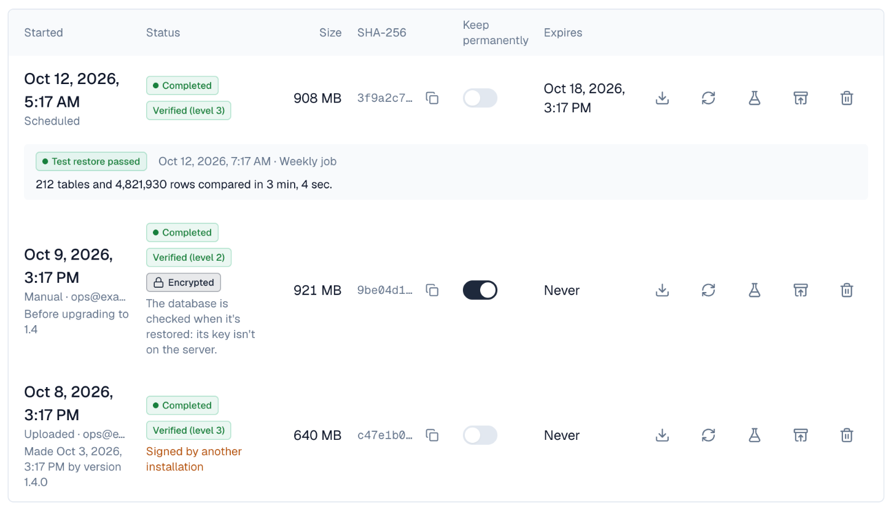
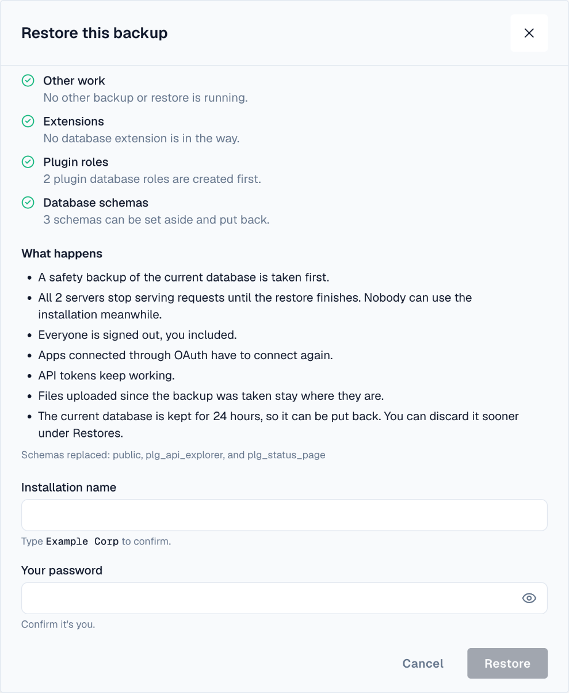
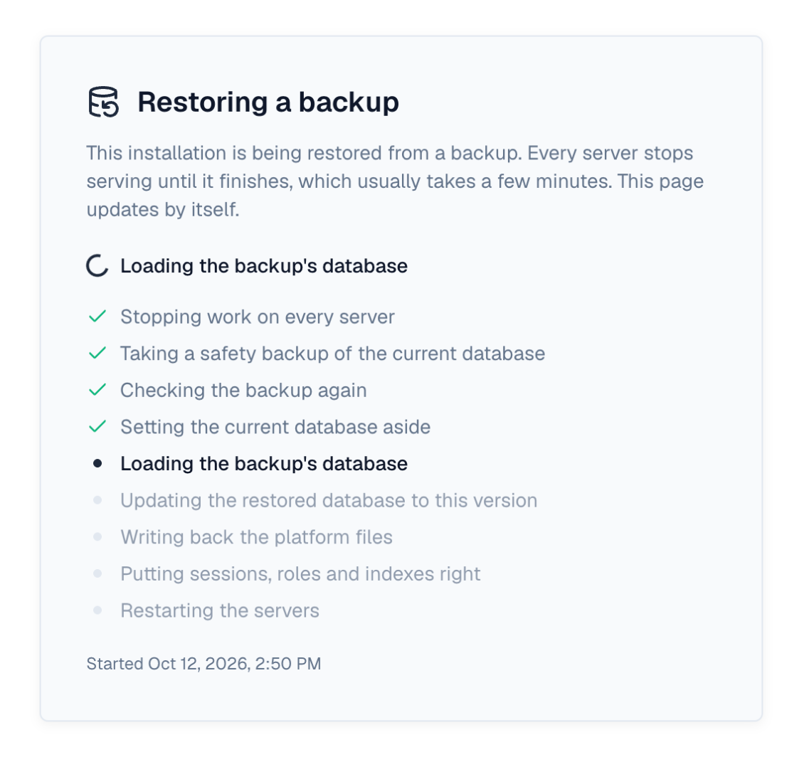
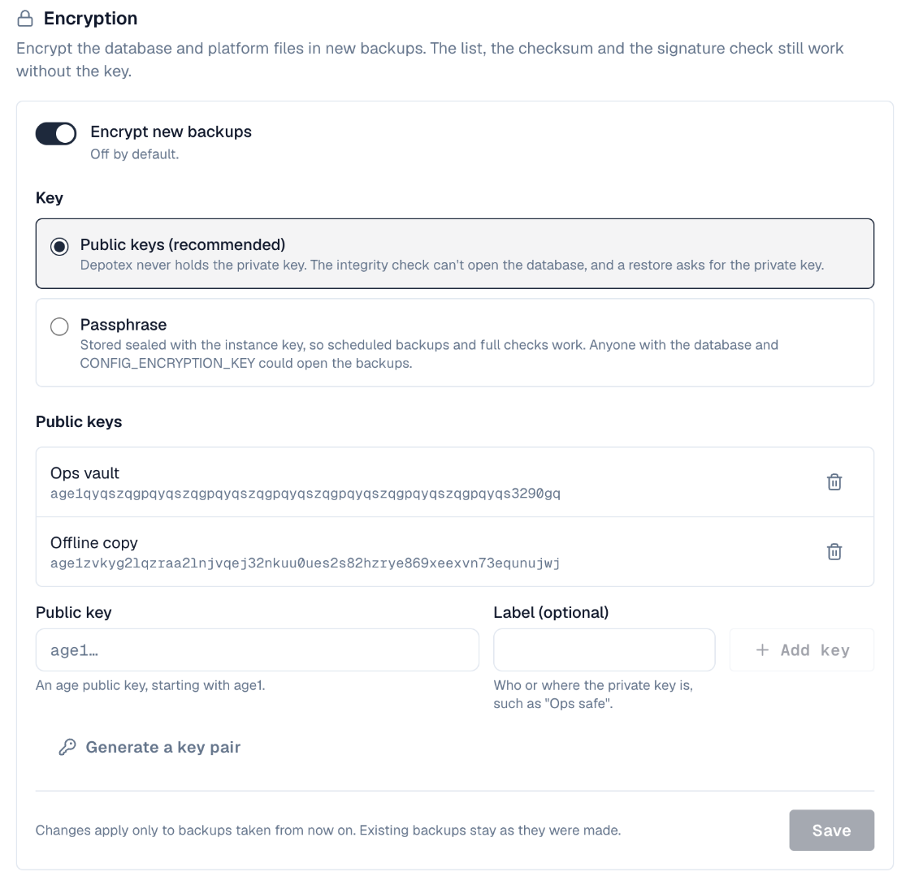
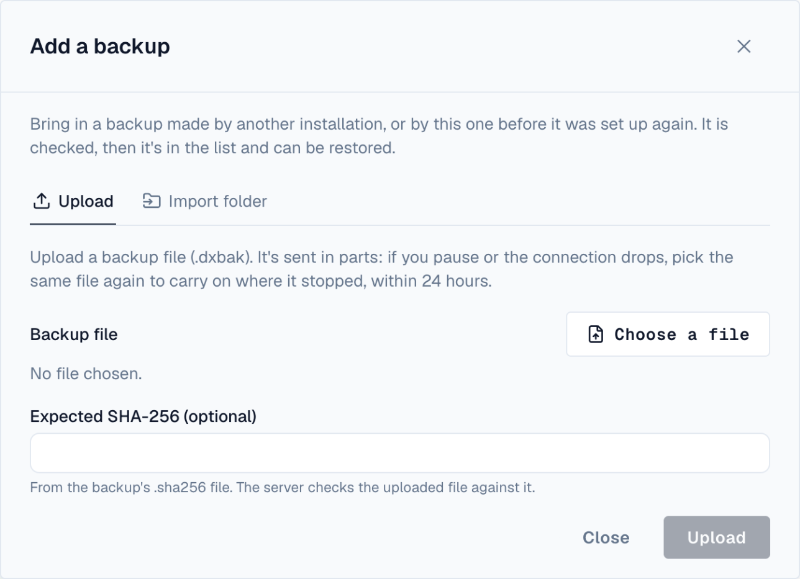
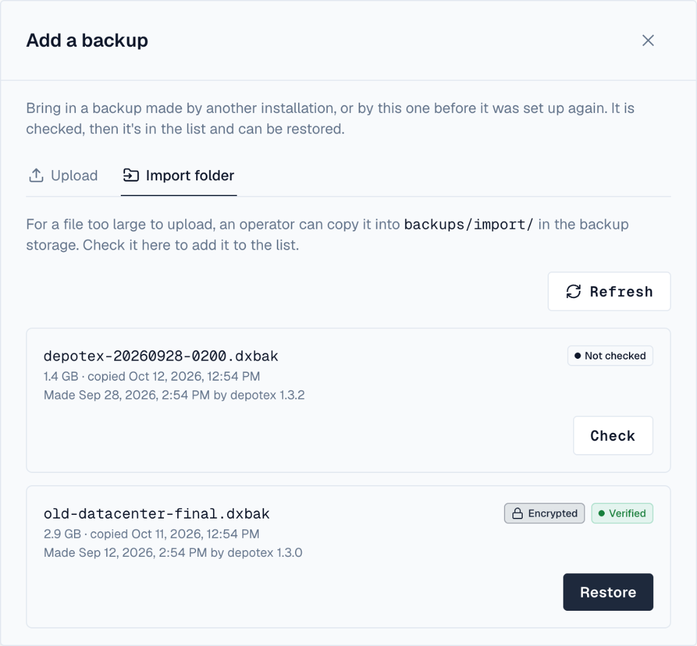
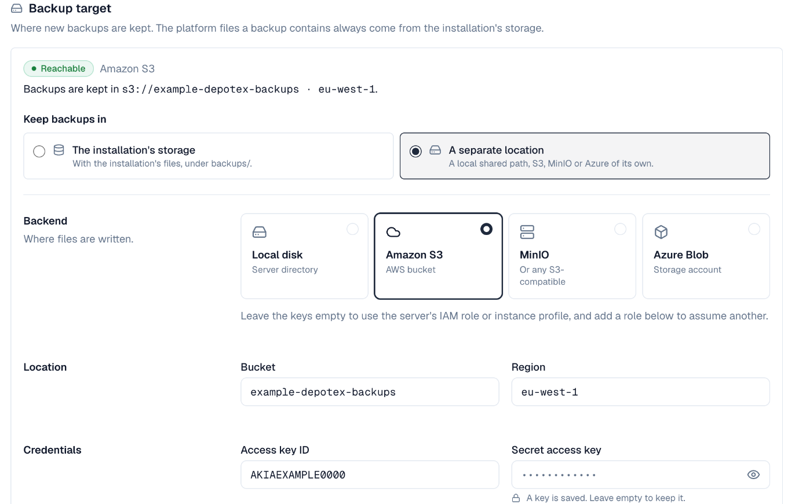
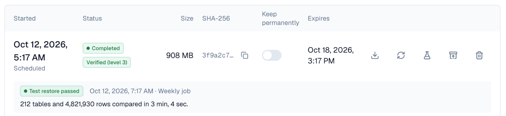

1. Overview
Settings → Backups takes a backup of this installation's database and its platform files: avatars, branding, plugin packages and uploaded SBOM documents. Every backup is read back and checked as soon as it's written, and its SHA-256 checksum is published next to it so you can check a downloaded copy. A verified backup can be restored over the installation, or onto a new server in its setup wizard. Available on every license tier, to super admins; test restores need Enterprise.
The page has three tabs: Backups (the list, under a summary of the backup target, encryption and the latest test restore), Restores (every restore and how far it got) and Settings (backup target, encryption and test restores). Change in the summary opens Settings.

Uploaded artifacts are not in a backup. Packages, images and files published to repositories stay in your storage and must be backed up with your storage platform's own tools: see Backing up artifact storage.
This backup is a convenience for small and medium installations. For a very large or very busy installation, rely on your database platform's own backups (point-in-time recovery, snapshots): a backup holds one consistent snapshot of the database for as long as the dump runs.
2. Take a backup
- Open — Go to Settings → Backups and choose Take backup.
- Options — Tick Keep permanently to stop the cleanup job from ever deleting it, and add an optional Note (for example "before upgrading to 1.4").
- Wait — The backup runs in the background. Its row shows Running, then the result of its check (Checking, then Verified (level 3)). You can leave the page.
Only one backup runs at a time across all servers; starting another while one runs says so. A backup is cancelled if it runs longer than BACKUP_MAX_DURATION (6 hours).
3. The list of backups
| Column | What it shows |
|---|---|
| Started | When it started, whether it was manual or scheduled, and who took it |
| Status | Running or Failed (with the reason) while it's taken; then its check: Check pending, Checking, Verified (level 3) or Check failed. Marks for Encrypted, In another backup target and the latest test restore, and a warning when the signature doesn't match or comes from another installation |
| Size | The size of the backup file |
| Keep | Keep permanently: switch it on or off at any time |
| Expires | When the cleanup job will delete it, or Never |
| Actions | Restore on a verified backup, Download, and the ⋯ menu: Check again, Test restore (Enterprise) and Delete |
The arrow at the start of a row opens its details: the SHA-256 checksum with a button to copy it, the kind and who took it, the note, where an uploaded backup came from, and the newest test restore. What a backup holds, under the list, folds out the notes on contents and the backup jobs.
4. How a backup is checked
Right after a backup is written, Depotex reads the whole file back from storage and checks it in three levels. Check again repeats the check at any time, for example after copying backups between storage locations.
- Level 1 — checksum: the SHA-256 of the whole file matches the one recorded when it was written (and published in its .sha256 file).
- Level 2 — structure and signature: the archive opens, its manifest is signed by this installation's backup key, and every file inside matches its own checksum.
- Level 3 — database dump: pg_restore --list reads the database dump's table of contents.
- Level 4 — test restore (Enterprise): the dump is loaded into a temporary database and every table's row count compared with the backup's. See Test restores.
A backup encrypted to public keys is checked up to level 2: the server doesn't hold the private key, so its dump is opened only when it's restored or test-restored with the key.
A backup that fails its check is marked Check failed with the reason, and super admins get a critical alert.
5. Download a backup and check it
Download saves the backup as a .dxbak file (a tar archive). Downloads are recorded in the audit log and need the backups:download permission, because a backup holds the whole database. Next to every backup, Depotex keeps a .sha256 file in sha256sum format; check a download against it:
curl -OJ -H "Authorization: Bearer $DEPOTEX_TOKEN" https://depotex.example.com/api/backups/$ID/download
curl -H "Authorization: Bearer $DEPOTEX_TOKEN" https://depotex.example.com/api/backups/$ID/checksum | sha256sum -cKeep downloaded backups somewhere other than the installation's own storage, or set a separate backup target.
The archive holds a signed manifest.json (versions, checksums), files.json, the database dump db.dump (PostgreSQL custom format) and the platform files under files/; in an encrypted backup the dump and files are inside one encrypted payload.age instead. Settings and plugin secrets in the dump are encrypted with the installation's CONFIG_ENCRYPTION_KEY: keep that key with your backups, since a restore needs the same one.
6. Restore a backup
A restore replaces this installation's database and platform files with a backup's. Everyone is signed out, and every server shows a maintenance screen until it ends. Needs the backups:restore permission (super admins).

- Choose the backup — On Settings → Backups, choose Restore on a verified backup (level 3, or level 2 for one encrypted to public keys).
- Read the checks — The dialog runs every pre-check (below) and says what will be replaced. Nothing changes yet. Restore stays off while a check fails.
- Give the key — For an encrypted backup, paste the private key or load it from a file, or type the passphrase (optional when Depotex still holds it). The key is tried on the backup before anything stops.
- Confirm — For a backup from another installation, tick that you want it anyway. Type the installation's name and your password, then Restore.
- Wait — Every server shows the maintenance screen with the current step. When it ends, sign in again with an account from the backup.

| Pre-check | Fails when |
|---|---|
| Backup | It isn't completed and verified |
| Storage | Its file can't be read |
| Signature | The signature isn't valid. Signed by another installation: a warning you must accept |
| Key | It was made with a different CONFIG_ENCRYPTION_KEY |
| Version | It comes from a newer Depotex version, or has data this version doesn't know |
| PostgreSQL | pg_restore is missing or older than the dump (an older database server only warns) |
| Idle | A backup or another restore is running |
| Extensions | A PostgreSQL extension is installed inside a schema the restore replaces |
| Roles and swap | The database user can't create plugin roles (needs CREATEROLE) or rename the schemas |
What the restore does, in order: every server stops taking requests (they answer 503 restore_in_progress) and pauses its jobs; a safety backup of the current database is taken; the backup is checked again and staged; the current database is set aside; the backup is loaded and brought up to this version; the platform files are written back (files added since the backup stay); signed-in sessions, OAuth tokens and plugin caches are reset, and people erased since the backup (GDPR) are erased again; then every server restarts on the restored database. API tokens from the backup keep working.
If anything fails, the previous database comes back on its own, and the servers restart on it. The same happens if the server running the restore stops: another server, or the next one to start, rolls it back.
The Restores tab lists every restore (a running one with a bar of its steps) with its outcome. After a successful restore the previous database is kept for 24 hours (BACKUP_RESTORE_KEEP_PRIOR) in case you need it; Discard previous database frees the space sooner.
The database briefly holds two copies (the previous and the restored one), and the server running the restore needs room in BACKUP_TEMP_DIR for the staged backup. Depotex doesn't check free space first.
7. Encryption
Under Encryption on the Settings tab of Settings → Backups, switch on Encrypt new backups (off by default) to encrypt the database dump and platform files of every new backup. The manifest stays readable, so the list still shows what each backup is. Existing backups aren't changed.

| Mode | How it works | Restore needs |
|---|---|---|
| Public keys (recommended) | Backups are encrypted to up to 20 age public keys (age1…). Depotex never holds a private key, so someone who takes the server can't open the backups. | One of the private keys |
| Passphrase | A passphrase of at least 12 characters, stored encrypted with CONFIG_ENCRYPTION_KEY, so backups are checked fully and test-restored on schedule. | Nothing while Depotex holds the passphrase; the passphrase on a new server |
Generate a key pair makes a new age key pair in the browser's session: copy or download the private key and keep it safe, then tick that you stored it to add the public key. The private key is shown once and stored nowhere. You can also add a public key made with the age-keygen tool.
Without the private key (or the passphrase), an encrypted backup can't be restored by anyone, including Depotex support.
8. Add a backup from elsewhere
To restore a backup that isn't in the list (downloaded earlier, or from another installation), choose Add a backup at the top of Settings → Backups. Needs backups:restore.

- Upload: choose the .dxbak file and, optionally, paste its SHA-256 (or the line of its .sha256 file). The file goes up in 16 MiB pieces (BACKUP_UPLOAD_CHUNK_SIZE), each checked on arrival; pause and resume at any time, and if the connection drops, choosing the same file again carries on where it stopped. An unfinished upload is dropped after 24 hours (BACKUP_UPLOAD_EXPIRY).
- Import folder: for a file too large for the browser, an operator copies it into backups/import/ in the backup storage (with its .sha256 file if there is one). The Import folder tab lists the files there with what each one is; Check adds one to the list.

Either way the backup is checked like any other, then offered for Restore. A backup from another installation shows Signed by another installation; restoring it needs your consent and the same CONFIG_ENCRYPTION_KEY. Uploaded and imported backups are never deleted by the cleanup job.
9. Disaster recovery
When the installation itself is lost, restore a backup onto a new server in one of two ways. Both need the backup's CONFIG_ENCRYPTION_KEY.
10. In the setup wizard
Start a new server as for a fresh installation and go through the setup wizard with the same license, database server and storage as before (a new, empty database). On the last step choose Restore from a backup instead of creating an administrator:

- Choose the backup — Upload the .dxbak file (sent in pieces; a broken connection resumes), or pick one already in backups/import/ of the storage you entered.
- Check it — The wizard shows when and by which version it was made, and whether it's encrypted. It must have been made with this server's CONFIG_ENCRYPTION_KEY.
- Key and consent — Give the key of an encrypted backup, tick that you want to restore it, and choose Complete.
- Wait and sign in — The server restores the backup on its first start and then shows the sign-in page. Sign in with an administrator from the backup.
The wizard's license, storage, Redis and installation ID are kept; everything else (people, settings, data) is the backup's. If the restore fails, the server opens the wizard again with the reason; retry, or create an administrator instead. An uploaded backup waits on the setup server's disk (SETUP_UPLOAD_DIR, default ./data/setup-upload) until setup completes, so that disk needs room for it. A backup kept on a separate backup target must be uploaded or copied into the import folder of the installation's storage.
11. From the command line
On an installation that is already set up, restore a file without the web app. Stop every other server first: the command refuses while others are running, unless --restore-force.
# check only: prints every pre-check, changes nothing
CONFIG_ENCRYPTION_KEY=... ./server --restore-file /backups/depotex-2026-10-11.dxbak
# restore
CONFIG_ENCRYPTION_KEY=... ./server --restore-file /backups/depotex-2026-10-11.dxbak --yes| Option | Meaning |
|---|---|
| --restore-file <file> | Copies the file (and its .sha256) into the import folder and restores it |
| --restore-import <name> | Restores a file already in backups/import/ |
| --yes | Restore; without it only the checks run |
| --restore-key-file <file> | The key of an encrypted backup: an age identity file, or a file holding the passphrase |
| --restore-sha256 <hash> | The SHA-256 the file must have |
| --restore-accept-foreign | Restore a backup signed by another installation |
| --restore-force | Restore although other servers report as running |
The command exits when it's done; start the servers normally afterwards. The first one to start finishes the restore (sessions reset, erasures replayed).
12. Backup target
By default backups are kept in the installation's own storage, under backups/, and Settings → Backups and the system check warn about it: losing the storage loses the backups too. On the Settings tab, under Backup target, choose A separate location (a local path shared by every server, Amazon S3, MinIO or Azure Blob Storage) for backups, checksum files, the import folder and uploads.

- Test checks that Depotex can write, read and delete there; Save tests again and writes a marker file, backups/.depotex-target. Every server checks that marker before writing, so a local path that isn't the same shared volume on every server is refused.
- An installation's file storage can't be a backup target. A location another installation uses asks you to take it over; one this installation used before becomes its target again, with its backups.
- Backups stay where they were written: one in another target is marked In another backup target, and can't be downloaded, checked or restored until that target is set again. Open uploads are dropped when the target changes.
- The platform files inside a backup still come from, and are restored to, the installation's storage.
13. Test restores
A test restore proves a backup really restores, without touching anything in use. Enterprise license; backups:manage. Choose Test restore in a verified backup's ⋯ menu (an encrypted one asks for its key): Depotex loads the dump into a temporary database on the same PostgreSQL server, compares every table's row count with the counts recorded when the backup was taken, and drops the temporary database. The row marks the newest result and opens on it, with any tables whose counts differ; the summary above the list shows the latest one.

- The weekly Backup test restore job (backup-test-restore, Sundays at 04:00, BACKUP_TEST_RESTORE_SCHEDULE) tests the newest verified backup it can open. A failure alerts super admins, and the system check warns when the last one failed or none passed in 15 days.
- One test restore runs at a time across all servers. The database user needs CREATEDB, and the database server needs room for a second copy while it runs.
- Owners and permissions, and platform files, aren't tested; a real restore checks those in its pre-checks.
- Count rows for test restores (on by default) counts every table while each backup is taken. On a very large installation, switch it off to save a full read of the database per backup: test restores then check only that the dump loads. Backups made before row counting existed are tested the same way.
14. Scheduled backups and cleanup
Two jobs in Settings → Advanced → Scheduled jobs look after backups:
| Job | Default | What it does |
|---|---|---|
| Scheduled backup (backup-scheduled) | Daily at 02:00, off | Takes a backup on schedule. Switch it on and set its time in Scheduled jobs. If a run was missed while every server was down, it runs once when one starts. |
| Backup cleanup (backup-cleanup) | Daily at 03:00, on | Deletes backups older than retention_days (7), with their checksum files. It never deletes a backup kept permanently, the newest verified backup, or an uploaded or imported one. It also drops the database a restore replaced once its 24 hours are up. |
| Backup test restore (backup-test-restore) | Sundays at 04:00, on (Enterprise) | Test-restores the newest verified backup |
| Backup upload cleanup (backup-upload-cleanup) | Every 15 minutes | Takes over uploads whose server stopped, and drops expired ones |
Switching a job on or off, or changing its schedule, applies on every server of a cluster within one tick of the job.
15. Backing up artifact storage
Artifacts are usually by far the largest part of an installation and change all the time, so Depotex leaves them to your storage platform, which can copy them incrementally. Back up the storage location set in Settings → Storage, and leave out the backups/ folder (it holds the Depotex backups themselves; copy those separately).
| Storage | How to back it up |
|---|---|
| Local disk | Snapshot the volume (LVM, ZFS, a cloud disk snapshot), or copy it with rsync -a --delete to another machine. In a cluster, back up the shared volume once. |
| Amazon S3 | Turn on bucket versioning, and use S3 Replication to another bucket or region, or AWS Backup for S3. |
| MinIO / S3-compatible | Use bucket replication to another MinIO, or mc mirror to another bucket on a schedule; turn on versioning where the service has it. |
| Azure Blob Storage | Turn on blob versioning and soft delete, and use object replication to another storage account, or Azure Backup for blobs. |
Take the Depotex backup and the storage backup close together in time: the database lists the artifacts the storage holds.
16. Permissions
| Permission | Allows |
|---|---|
| backups:read | Seeing the list of backups and their checksums |
| backups:manage | Taking, checking again, keeping and deleting backups |
| backups:download | Downloading a backup (the whole database) |
| backups:restore | Restoring a backup, adding one by upload or from the import folder, and discarding a previous database |
No role holds them: super admins can do everything, and API tokens they create can be given these permissions for automation. Changing encryption, the backup target and row counting needs backups:manage.
17. Events, alerts and metrics
- Events backup.create, backup.update, backup.delete, backup.download, backup.restore, backup.upload, backup.settings.update, backup.target.update and backup.test_restore (before and after: policies and plugins can refuse them), backup.verify and backup.fail (after). See Events.
- A failed restore or test restore sends super admins a critical alert with the reason.
- System checks Backup target (warns while backups share the installation's storage, fails when the target can't be reached or its marker is wrong) and Test restores (Enterprise).
- A failed backup or check sends super admins a critical alert, "The scheduled backup failed its integrity check" or "couldn't be written", with the reason. The scheduler's own "job is failing" alert applies to the scheduled backup too.
- Prometheus metrics: depotex_backup_runs_total, depotex_backup_verifications_total, depotex_backup_duration_seconds, depotex_backup_last_size_bytes, depotex_backup_last_success_timestamp_seconds and depotex_backup_cleanup_deleted_total, depotex_backup_restore_runs_total, depotex_backup_restore_duration_seconds, depotex_backup_test_restore_runs_total and depotex_backup_test_restore_last_success_timestamp_seconds. Alert on the last success timestamps to catch backups or test restores that stopped.
18. When a backup fails
| Reason | What to do |
|---|---|
| pg_dump isn't installed / is older than the database | The server image ships pg_dump 18. On other installs, install the PostgreSQL client tools at least as new as the database server, or point BACKUP_PG_DUMP and BACKUP_PG_RESTORE at them. |
| The platform files are too large | Raise BACKUP_FILES_MAX_BYTES (10 GiB), or move large files out of platform storage. |
| Couldn't be written to or read from storage | Check Settings → Storage with Test connection, and that the storage has room. |
| Stopped before it finished | Its server restarted or stopped reporting for 5 minutes. Take a new backup. |
| The file doesn't match its checksum / the signature isn't valid | The backup was changed or damaged in storage. Delete it and take a new one, and check what else can write to the storage. |
| The backup target can't be used / its marker doesn't match | Test the target under Backup target. On a local path, check every server mounts the same shared volume there. |
| A restore was rolled back | The Restores list shows the step and reason; the installation runs on its previous database. Fix the cause (often a pre-check, space, or the key) and restore again. |
| The test restore can't create its database | Give the database user CREATEDB (ALTER ROLE … CREATEDB). |
| The row counts differ | The backup doesn't hold what the database held when it was taken. Take a new backup and test it; contact support if it happens again. |
19. Configuration
Set on each server; schedules and retention saved in Scheduled jobs win over these.
| Variable | Default | Purpose |
|---|---|---|
| BACKUP_SCHEDULE | 0 2 * * * | Default time of the scheduled backup (off until switched on) |
| BACKUP_CLEANUP_SCHEDULE | 0 3 * * * | Default time of the cleanup |
| BACKUP_RETENTION_DAYS | 7 | Days a backup is kept, unless kept permanently |
| BACKUP_MAX_DURATION | 6h | A backup and its check are cancelled after this |
| BACKUP_FILES_MAX_BYTES | 10 GiB | Most platform files one backup copies |
| BACKUP_PG_DUMP, BACKUP_PG_RESTORE | pg_dump, pg_restore | The PostgreSQL client tools to use |
| BACKUP_TEMP_DIR | the system temp folder | Where the dump and files are staged; needs room for the compressed dump plus the platform files (an encrypted backup briefly needs twice that, a restore the backup's) |
| BACKUP_TEST_RESTORE_SCHEDULE | 0 4 * * 0 | Default time of the weekly test restore |
| BACKUP_RESTORE_KEEP_PRIOR | 24h | How long the database a restore replaced is kept |
| BACKUP_UPLOAD_CHUNK_SIZE | 16 MiB | Size of upload pieces (1 to 64 MiB); above 32 MiB raise FRONTEND_API_BODY_LIMIT too |
| BACKUP_UPLOAD_EXPIRY | 24h | An unfinished upload is dropped this long after its last piece |
| SETUP_UPLOAD_DIR | ./data/setup-upload | Where a backup uploaded to the setup wizard waits until setup completes |
On Kubernetes, the server pod's /tmp is where backups are staged: set backend.tmpSize in the Helm chart larger than a compressed dump of your database, or set BACKUP_TEMP_DIR to a larger volume. See Docker & Kubernetes.
20. API
| Route | Permission | What it does |
|---|---|---|
| GET /api/backups | backups:read | Backups, newest first, with status, check, SHA-256 and expiry |
| POST /api/backups | backups:manage | Take a backup (keepPermanently, note) |
| GET /api/backups/{id} | backups:read | One backup |
| PATCH /api/backups/{id} | backups:manage | Keep permanently, note |
| DELETE /api/backups/{id} | backups:manage | Delete a backup and its checksum file |
| POST /api/backups/{id}/verify | backups:manage | Check it again |
| GET /api/backups/{id}/checksum | backups:read | <sha256> <file>, as in the .sha256 file |
| GET /api/backups/{id}/download | backups:download | Download the archive |
| GET /api/backups/{id}/restore/check | backups:restore | Every pre-check and what would be replaced; changes nothing |
| POST /api/backups/{id}/restore | backups:restore | Restore (confirm: the installation's name, password, acceptForeign, key) |
| GET /api/backups/restores | backups:read | Restores, newest first |
| POST /api/backups/restores/{id}/discard | backups:restore | Drop the database a restore replaced |
| GET /api/restore/status | none | Whether a restore runs and its step (for the maintenance screen) |
| POST / GET /api/backups/{id}/test-restore | backups:manage / backups:read | Start a test restore (Enterprise; optional key) / its newest result |
| GET / PUT /api/backups/settings | backups:read / backups:manage | Encryption, row counting and the backup target; a field left out keeps its value |
| POST /api/backups/settings/keypair | backups:manage | A new age key pair, stored nowhere |
| PUT /api/backups/settings/target, POST …/target/test | backups:manage | Set (separate, storage, adopt) or test the backup target |
| GET / POST /api/backups/imports | backups:restore | List the import folder / check a file in it (name) |
| POST /api/backups/uploads | backups:restore | Start an upload, or resume the same file's (fileName, size, lastModified, expectedSha256) |
| PUT /api/backups/uploads/{id}/chunks/{n} | backups:restore | One piece, with Content-Digest: sha-256=:<base64>: |
| GET …/uploads/{id}/status, POST …/complete, DELETE …/uploads/{id} | backups:restore | Progress, finish (assembled and checked in the background), cancel |